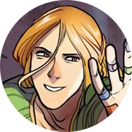

Киберспортсменка, гик, бровастая красавица. Переживает за финал «Ганнибала» больше, чем за голодных детей в Африке. Новенькая в Настоящей Московской Библиотеке — как и читатель, не понимает ровным счетом ничего. Её цвет — жёлтый, и она маг боевого спектра.
Саша Алиновский
Неубиваемый бунтарь, которого чуть не сбил гроб на колесиках. Живет с долбанутым экстравертом Соловьем на квартире вместо универской общаги, чему не очень рад.

Соловей (Артур)
Долбанутый экстраверт с повадками трехлетнего ребенка, курит чернила и выступает за права шлепок. Персонаж, когда-то давно придуманный Ангелиной Евгеньевной и неясным образом существующий в реальном мире.
Инга Шелковиц
Маг Ордена книгочеев. Обладает сверхскоростью. Может соединять стихию своего цвета, воздуха, со стихией света для совершения различных чар, например, телепортации. Хобби: лапать Сашу.
Матвей Корецкий
Тот самый чувак, который выпендривается перед ректором, а прилетает за это всем. Бомж и феечка в одном лице. Способен летать, на носу вечно прилеплен пластырь.
Ангелина Евгеньевна
Глава Московской Библиотеки и маг Ордена книгочеев. Женщина за 60. Пытается бросить курить, за своих студентов и двор стреляет в упор. Экспериментирует с имиджем по настоятельной просьбе Роскомнадзора.
Владимир
Бывший воспитатель Лилии Романовой, каким-то образом связанный с Орденом книгочеев и их давней войной с магами монохрома. Кира считает, что Владимир убил её брата Кая, чтобы отобрать цвет монохрома.
Кира
Маг монохрома, обладательница чёрных чернил, чей брат-дуал по имени Кай был убит. Кира считает, что это Владимир, которого Дядя Коля с помощью своих воспитанников удерживает в плену вместе с Кирой, убил её брата, чтобы отобрать цвет монохрома.
Прасковья
Старшая тень Настоящей Московской Библиотеки, некогда бывшая одной из её талантливейших студенток и сумевшая освоить шесть цветов чернил. Её главная обязанность — это обучение теней новому способу существования путём пропускания через себя.